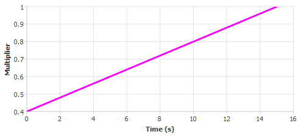
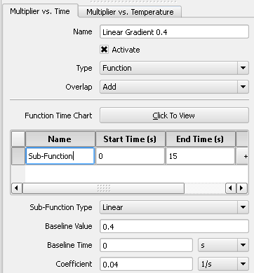
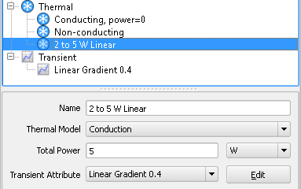

In this example
a transient attribute is defined to vary a heat source between 2
and 5 Watts linearly from 0 and 15 seconds. The required multiplication factor
of the transient is then calculated to vary from 0.4 (2/5) to 1
(5/5).
Procedure
- Create a new Thermal attribute
and set the following in the property sheet:
Name: for example, “2
to 5 W Linear”
Thermal Model: Conduction
Total Power: 5 W — the
maximum power that will be applied
- For the Transient Attribute,
select Create New.
A new Transient attribute is
opened at the Multiplier vs. Time tab.
- Set the following in the property
sheet:
Name: for example, “Linear
Gradient 0.4”
Type: Function
Overlap: leave as is.
Add a Sub-Function to
the list by clicking the + button and then set the End Time to 15
s.
- For the Sub-Function, set
the following:
Sub-Function Type: Linear
Baseline Value: 0.4 because
the required multiplication factor of the transient should then
vary from 0.4 (2/5) to 1 (5/5).
Baseline Time: 0 s
Coefficient:
0.04 that is, the gradient of the function which, in this example
= (1 − 0.4)/15
Results
The sub-function is shown in Figure 1.
Figure 1. Transient Attribute
Curve
When this is applied to a 5 W thermal
attribute, the transient will vary linearly from 0.4 * 5 (that is,
2) W at 0 s to 1 * 5 (that is, 5) W at 15 s.
The transient attribute property
sheet is shown in Figure 2.
Figure 2. Example Transient Attribute
Property Sheet
The thermal attribute property
sheet is shown in Figure 3.
Figure 3. Example Thermal Attribute
Property Sheet